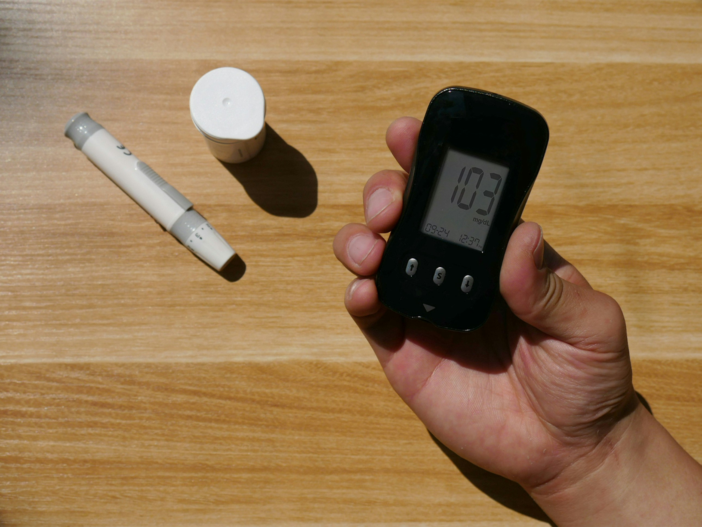

Smart diabetic care focused on stable glucose levels, healthy lifestyle habits, nutritional balance, and long-term wellness through modern monitoring and preventive healthcare.
Sugar Monitoring
Health Insights
Lifestyle Focused

Wellness Insight
Essentials
Balanced meals with controlled sugar intake.
Daily movement improves glucose response.
Prevent complications through regular checks.
“Effective sugar management is not about restriction — it’s about building sustainable habits that support energy, stability, and long-term health.”
Diabetes management today goes beyond medication. Advanced monitoring systems, personalized nutrition, fitness tracking, and preventive care help individuals maintain healthier glucose levels and reduce long-term risks.
Real-time glucose monitoring helps identify patterns and supports better daily decisions.
Meal planning tailored to lifestyle and metabolic response improves sugar balance naturally.
Diabetes Care Insights
Effective sugar management helps maintain energy, protect vital organs, reduce complications, and improve long-term quality of life through smarter lifestyle and medical care decisions.
Routine glucose monitoring and health screenings help detect blood sugar imbalances early before serious complications develop.
Balanced nutrition, physical activity, hydration, and proper sleep all contribute to healthier and more stable blood sugar levels.
Consistent sugar management reduces the risk of heart disease, nerve damage, kidney issues, and vision complications.
Wellness Journey
Tracking glucose levels regularly helps identify patterns and supports better decisions regarding meals, exercise, and medications.
Structured meal planning with fiber-rich foods, healthy proteins, and controlled carbohydrate intake supports stable sugar levels.
Daily physical activity improves insulin sensitivity, enhances metabolism, and contributes to healthier glucose regulation.
“Healthy sugar management is not about restriction — it is about creating sustainable habits that support lifelong wellness.”
Modern lifestyles, processed foods, stress, and reduced physical activity have contributed significantly to the global rise in diabetes and blood sugar-related disorders. Proper sugar management has become essential not only for diabetic patients but also for overall preventive healthcare.
One of the most important aspects of sugar management is consistent monitoring. Regular glucose checks help individuals understand how their body responds to different foods, activities, stress levels, and medications.
Nutrition also plays a critical role in maintaining stable blood sugar levels. Balanced meals rich in vegetables, lean proteins, healthy fats, and whole grains can help reduce sudden glucose spikes and improve long-term metabolic health.
Physical activity improves insulin sensitivity and helps the body utilize glucose more efficiently. Even moderate daily exercise such as walking, yoga, or cycling can significantly improve sugar control and energy levels.
Beyond physical health, effective sugar management improves emotional well-being and quality of life. Better energy, improved sleep, reduced fatigue, and lower health risks help individuals lead healthier and more confident lives.